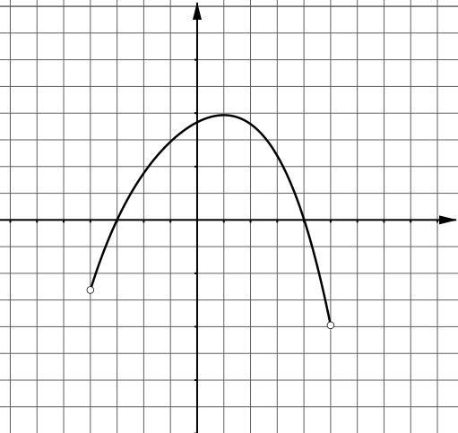
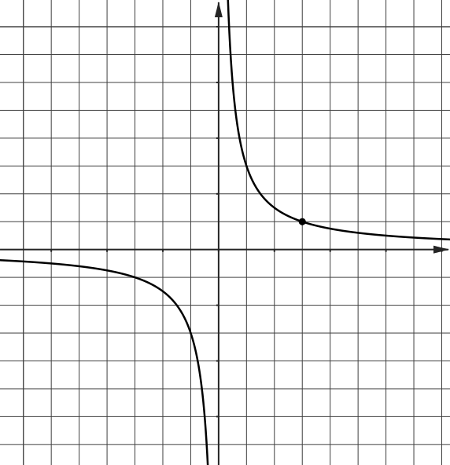

$\newcommand{\tg}{\text{tg}}$
$\newcommand{\br}[1]{\left(#1\right)}$
$\newcommand{\vbr}[1]{\left|#1\right|}$
$\newcommand{\cbr}[1]{\left\{#1\right\}}$
$\newcommand{\rbr}[1]{\left[#1\right]}$
$\renewcommand{\le}{\leqslant}$
$\renewcommand{\ge}{\geqslant}$
Вписанный в окружность угол на $17^{\circ}$ меньше центрального угла, опирающегося на ту же дугу.
Найдите
величину центрального угла. Ответ дайте в градусах.
Даны векторы $\vec{a}\br{3; 1}$ и $\vec{b}\br{x; 9}$. Найдите такое значение $x$, при котором векторы
$\vec{a}$ и $\vec{b}$ перпендикулярны.
В прямоугольном параллелепипеде $ABCDA_{1}B_{1}C_{1}D_{1}$ $AB = 7$, $BC = 4$, и $AA_{1} = 3$.
Найдите объём треугольной пирамиды $ABDA_{1}$.
$B$
$B_{1}$
$A$
$A_{1}$
$D$
$D_{1}$
$C$
$C_{1}$
Из $300$ произведённых насосов в среднем $33$ подтекают. Найдите вероятность того, что случайно выбранный
насос не подтекает.
При выпечке хлеба производится контрольное взвешивание свежей булочки. Известно, что вероятность того, что
масса окажется меньше, чем $810$ г, равна $0,93$. Вероятность того, что масса окажется больше, чем
$790$ г, равна $0,87$. Найдите вероятность того, что масса булочки больше, чем $790$ г, но меньше, чем
$810$ г.
Решите уравнение $\br{\dfrac {1} {3}}^{x - 13} = \dfrac {1} {81}$.
Найдите значение выражения $28 \sin \dfrac {5\text{π}} {6} \cos \dfrac {5\text{π}} {6}$.
На рисунке изображён график функции $y = f \br{x}$, определённой на интервале $\br{-4; 5}$.
Найдите корень уравнения $f \prime \br{x} = 0$.

$y$
$x$
$y = f\br{x}$
$-4$
$0$
$5$
Для обогрева помещения, температура в котором поддерживается на уровне $T_{\text{П}} =
25^{\circ}\!\text{С}$,
через радиатор отопления пропускают горячую воду. Расход проходящей через трубу радиатора воды
$m = 0,3$ кг/с. Проходя по трубе расстояние $x$, вода охлаждается от начальной температуры
$T_{\text{В}} = 73^{\circ}\!\text{С}$ до температуры $T$, причём
$$x = \text{α} \dfrac {cm}{\text{γ}} \log_{2} \dfrac {T_{\text{В}} - T_{\text{П}}} {T - T_{\text{П}}},$$
где $c = 4200\ \dfrac {\text{Вт} \cdot \text{с}} {\text{кг} \cdot ^{\circ}\!\text{С}}$ — теплоёмкость воды,
$\text{γ} = 21\ \dfrac {\text{Вт}}{\text{м} \cdot ^{\circ}\!\text{С}}$ — коэффициент теплообмена,
а $\text{α} = 1,3$ — постоянная.
Найдите, до какой температуры охладится вода, если длина трубы радиатора равна $312$ м.
Ответ дайте в градусах Цельсия.
На изготовление $100$ деталей первый рабочий тратит на $2$ часа меньше, чем второй рабочий на изготовление
$112$ таких же деталей. Известно, что первый рабочий за час делает на $4$ детали больше, чем второй.
Сколько деталей в час делает второй рабочий?
На рисунке изображён график функции $f\hspace{0.1mm}\br{x} = \dfrac {k} {x}$.
Вычислите $f\hspace{0.1mm}\br{10}$.

$y$
$x$
$0$
$1$
$1$
$y = f
\br{x}$
Найдите точку максимума функции $f\br{x} = 13 + 39x - 2x \sqrt{x}$.
- Решите уравнение: $$ 2\sin^3 x = \cos\br{x - \dfrac {\text{π}} {2}} $$
- Укажите корни этого уравнения, принадлежащие отрезку
$\rbr{\hspace{-1mm}-\dfrac {3 \text{π}} {2}; -\dfrac {\text{π}} {2}}$.
В треугольной пирамиде $ABCD$ $AB = AC = CD = BD = 5$. Двугранные углы при рёбрах $BC$ и $AD$ равны.
- Докажите, что $BC = AD$.
- Найдите объём пирамиды, если двугранные углы при рёбрах $BC$ и $AD$ равны $60^{\!\circ}$.
Решите неравенство
$$2\log_{2}\br{4 - \dfrac {4} {x - 3}} \le 16 - \log_{0\hspace{-0.5mm},5} \br{8 + \dfrac {8} {x - 4}}.$$
Планируется взять кредит на некоторое целое число месяцев. Условия его возврата таковы:
- 1 числа долг по кредиту возрастает на 20% по сравнению с концом предыдущего месяца;
- с 2 по 14 число необходимо выплатить одним платежом часть долга;
- 15 числа каждого месяца долг по кредиту должен быть на одну и ту же величину меньше долга на
15 число предыдущего месяца.
На сколько месяцев планируется взять кредит, если общая сумма выплат по кредиту больше начальной суммы
кредита на 25%?
Трапеция $ABCD$ с основаниями $BC$ и $AD$, из которых $AD$ большее, разделена диагональю $AC$ на 2 подобных
треугольника.
- Докажите, что углы $ACD$ и $ABC$ равны.
- Известно, что $AD = 50$, $BC = 18$, а $\cos \angle CAD = \dfrac {3} {5}$. Найдите длину отрезка,
соединяющего середины оснований трапеции.
Найдите все значения параметра $a$, при которых уравнение
$$\dfrac {x^2 - 6x - a} {2x^2 - a - a^2} = 0$$
имеет ровно два различных решения.
На доске написано не менее двух трёхзначных чисел (не обязательно различных), в записи которых нет нулей.
У каждого из этих чисел стёрли вторую цифру (так, например, число 827 стало числом 87).
- Приведите пример такого набора чисел, что сумма полученных чисел в 9 раз меньше суммы исходных.
- Может ли сумма полученных чисел быть в 6 раз меньше суммы исходных?
- Найдите наименьшее количество чисел на доске, если сумма полученных чисел в 14 раз меньше суммы
исходных.